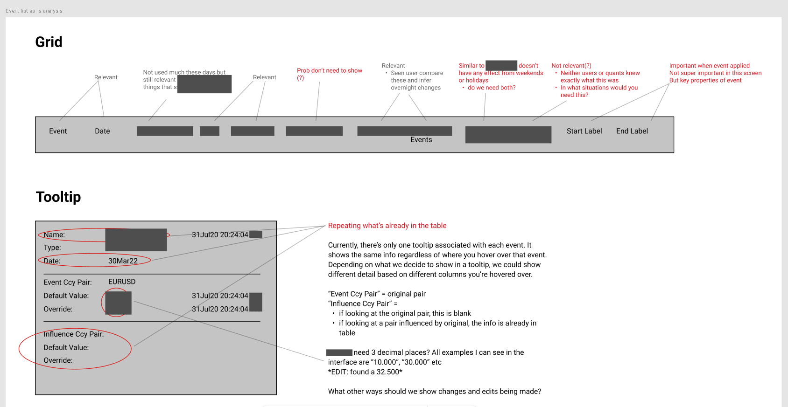

A more suitable framework for modelling complexity
It soon became apparent that traditional UX synthesis methods like journey mapping did not fully capture the complexity of trader workflows. These workflows were fundamentally nonlinear, with no defined "happy path" for users to follow.
We decided to apply Nielsen Norman Group's 5 Layers of Complexity framework as a complementary problem solving lens. Applying a structured approach like this helped us break these concepts down into more manageable chunks for stakeholders. For the sake of scope and political sensitivity, we excluded the "Institution" layer from our direct analysis, but it was still an important factor for the design team to consider.
Environment
Collaboration, interruptions, distractions, and breaks in workflow
- Global user base with multiple users able to edit simultaneously but not collaboratively, leading to overwrites
- In edit mode, new events pop up that are relevant to what the user is doing but break focus
- Users need to know how changes will affect the curve and other curves — which changes are their edits and which are published
Intention
Supporting unstructured goals, broad tasks, and decision-making
- Users need to see what would be different if they accept an auto-publish, compared to the changes they have made in edit mode
- P&L exposure when marking the curve — currently users need to work back and undo changes to see what caused P&L to go down, which is dangerous if you undo the correct thing
Information
Data volume; presentation and analysis of large data sets
- System grown organically which has led to inconsistency in information delivery systems
- Lack of a cohesive visual language and notification system creating significant risk of banner blindness and error-making
- Users can customise colours of their messages which conflicts with error states
Integration
Complex back-end architecture; legacy of underlying systems
- System fails to publish creating significant risk of error, confusion and financial loss
- Loss of edits delays task completion and creates rework
- Manual process to mark risk reversal and butterfly
- iframe constraint — incremental rollout meant features constrained to boxes (e.g. tooltips)

Case Study
Problem Space
users see every error, not sure which relevant. users can customise colours of their messages which conflicts with errors, banner blindness
Approach
-

User Research
Loss of edits delays task completion and creates rework, particularly relevant with a global user base with multiple users able to edit simultaneously but not collaboratively, overwriting
Users approach things differently - some don't use broker screens as they find there's too many, they prefer to transact over voice channels which also allows for more opportunity to build rapport
organisational issue - aging tech platform meant hard to recruit and retain devs, unproductive environment for devs due to slow delivery and immature test strategy
idea to show what would be diff if you accept an auto publish, compared to the changes you have made in edit mode
P&L exposure when you mark the curve, currently done external tool copy paste values (?). Currently users need to work back and undo changes to see what caused P&L to go down, dangerous if you undo the correct thing
in edit mode, need to get feedback for new events currently they just pop up and they are relevant to what user doing
user need to know how changes will affect curve and other curves, which changes are their edits and which are published
"We would've went way through our target instead of a modest profit"
"I'm interested in how the system behaves under pressure, that's where I need to work quickly... I don't want it to lead us into avoidable mistakes."
-

Remote Co-creation Workshop
Hosted an online co-creation session with stakeholders to collaboratively design potential digital service journeys and features.
-

Roadmapping
Developed a high-level roadmap outlining phased implementation, dependencies, and priorities for digital initiatives.
critically evaluate required functionality through UR, log harvesting and analytics
What We Delivered
- A high-level roadmap outlining key milestones and dependencies.
- Detailed reports documenting recommendations and options.
- Guidance on aligning digital strategies with organizational goals.
Outcomes
Migration scope defined - UI enhances from a UX pov, optimise information hierarchy, build loosely-couples modular widgets that can be remixed into bespoke workflows
Out of scope - backend processes eg publishing, market environment maintenance, model interaction. Some causes of slowness eg publish delays, slow recalc
There's a big premium for clarity, anything that adds 5 seconds here or 10 seconds there all adds up. There are days where I don't have 30 seconds to rub together.
Did my publish go through? I'm really hoping this doesn't revert to the last published state
iframe constraint - incremental before full rollout meant features constrained to boxes eg tooltip
error messaging container vs global level
iterative development vs compromised experience
you load a currency pair and the main view inherits the cut from that surface. for most pairs only one cut but for some can be more than one
automation of risk reversals
The Tradeoffs of a Phased Migration
The project followed an incremental delivery strategy. Rather than replacing the legacy platform in one go, we drip-fed individual pieces of new functionality into WebView2 containers embedded within the existing interface.
This approach was deliberate. Traders operate under extreme time pressure — any major disruption to their workflow carries real financial risk. By introducing changes incrementally, we allowed traders to continue business as usual without drastically changing their process, while giving the in-house team the opportunity to embed iterative testing practices into their way of working.
But this came with a significant design tradeoff. The mix of old and new technology created usability challenges that we had to actively design around. Screen real estate within the new containers was limited, making it difficult to communicate information-rich states like errors and confirmations within a small footprint. And because there was no global notification system spanning both the legacy and modern layers, each new component had to handle its own feedback in isolation.
These weren't hypothetical constraints — they shaped every design decision, from how we surfaced error states to how we handled publish confirmations within a single embedded widget.


From Embedded Widgets to a Standalone Platform
What feature requests don't capture
Good Design and Product work needs to consider the underlying need behind individual feature requests, and acts as a filter that ensures any changes interact well with the wider ecosystem.
One of the core reasons this project was needed in the first place was because discrete and uncoordinated feature requests had caused the tool to grow over time, to an unmanageable point.
In a domain this specialised, it can be tempting to simply build whatever users ask for. But this is neither a prudent nor sustainable approach to design.
Expert users don't always choose the best solutions — and more importantly, they sometimes don't even recognise the problems. Years of operating on autopilot in a high-pressure, expert workplace means workarounds become invisible. Inefficiencies get absorbed into muscle memory. Pain points stop registering as pain points.
A feature request captures what a user thinks they want in the moment. It rarely captures the full context — the time pressure, the adjacent tasks competing for attention, or the downstream consequences when a workaround fails silently. Designing from requests alone risks optimising the wrong thing, or reinforcing patterns that are already causing harm.
Our role was to look beyond stated requests and understand the underlying scenarios — the real conditions, pressures and constraints users operate within — and let those drive the solution.